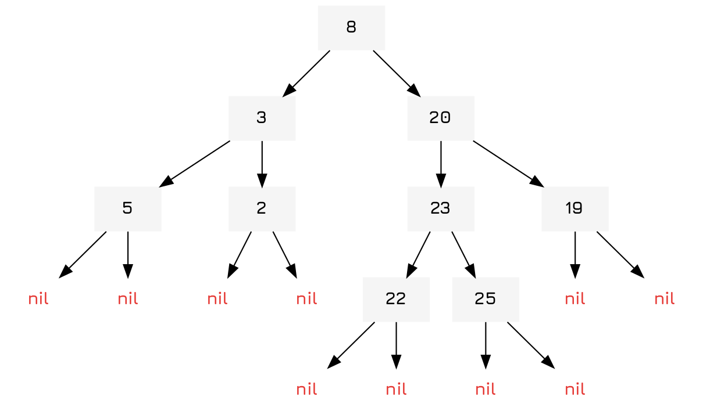

Implementing Binary Tree Sets
Table of Contents
Introduction
Binary trees are a classic datastructure, basically like a linked list but with two children nodes rather than one node. Each of the child nodes can then link to further child nodes and so on until they reach leaf nodes, which are traditionally nil.

You can also use them for sets which have a simple, linear space complexity and are fairly space efficient when compared to hash-sets. However, they do have longer access times with \(O(log(n))\) being the standard for most operations.
Implementation
Object and Constructor
To start it all off we define an object and a constructor. The constructor just takes a seq-able collection and converts it into a binary tree. This only works if elements within the collection can be compared with other elements, otherwise it will return an error.
(defrecord BintreeNode [val lesser greater]) (defn bintree-set [coll] (reduce bintree-insert nil coll))
Insert
Insertion in the binary tree is easy. If a key is present nothing has to be done! It can just return. If the node is nil, then it is at a leaf node and it can insert a new node. Lastly, if it is at a node it checks itself against the value of the node and chooses the lesser (left) side if it is lesser, else the right side and applies itself.
(defn bintree-insert [{:keys [val lesser greater] :as node} key] (cond (= val key) node (nil? node) (->BintreeNode key nil nil) (< key val) (assoc node :lesser (bintree-insert lesser key)) :else (assoc node :greater (bintree-insert greater key))))
Contains
Here we define a predicate to check if an element is contained within the binary tree. This function is implemented in almost exactly the same way as the above, traversing until it hits the key itself or nil.
(defn bintree-contains? [{:keys [val lesser greater]} key] (cond (= val key) true (nil? val) false (< key val) (bintree-contains? lesser key) :else (bintree-contains? greater key)))
Traversals
Here we define some traversals for our tree. Traversals are simply functions that recursively visit all the nodes in the tree once.
The pre-order traversal returns a list of all nodes with the visited node first, followed by it's lesser and then greater children.
(defn pre-order [{:keys [val lesser greater]}] (concat [val] (when lesser (pre-order lesser)) (when greater (pre-order greater))))
The post-order traversal does the same, but with the node last.
(defn post-order [{:keys [val lesser greater]}] (concat (when lesser (pre-order lesser)) (when greater (pre-order greater)) [val]))
Finally, the in-order traversal returns a sorted list of all nodes by visiting the lesser nodes first, itself, and then the greater nodes.
(defn in-order [{:keys [val lesser greater]}] (concat (when lesser (in-order lesser)) [val] (when greater (in-order greater))))
Set-theoretic
Here we just implement the various set-theoretic functions.
The union function is fairly simple, obtaining the post-order traversal of the first binary tree and then inserting all the elements into the second. It's time complexity is \(O(n\ log(n))\).
(defn bintree-union ([a b & rest] (reduce bintree-union a (cons b rest))) ([a b] (->> a post-order (reduce bintree-insert b))))
This just checks if a node is contained in the other tree, and if it is, adds it to the new set of nodes. It's time complexity is \(O(n\ log(n))\).
(defn bintree-intersection ([a b & rest] (reduce bintree-difference a (cons b rest))) ([a b] (->> a post-order (filter (partial bintree-contains? b)) bintree-set)))
Lastly we find the difference between two binary trees by simply filtering out the set of nodes that are contained within the second binary tree. Like all set-theoretic functions it is variadic and accepts an arbitrary number of arguments. It's time complexity is \(O(n\ log(n))\).
(defn bintree-difference ([a b & rest] (reduce bintree-difference a (cons b rest))) ([a b] (->> a post-order (filter #(not (bintree-contains? b %))) bintree-set)))
Lastly we have a simple function that determines if one tree is a subset of another tree by checking if each item is contained in the other tree. It's time complexity is (I know you will be shocked) \(O(n\ log(n))\).
(defn bintree-subset? ([a b & rest] (reduce bintree-difference a (cons b rest))) ([a b] (not (->> a post-order (some #(not (bintree-contains? b %)))))))
Python Code
Below is also the code in python.
class BintreeNode: def __init__(self, val): self.gtr = None self.lsr = None self.val = val class Bintree: def __init__(self): self.head = None def add_node(self, val): if not self.head: self.head = BintreeNode(val) else: current_node = self.head inserted = False while not inserted: if current_node.val > val: if current_node.lsr: current_node = current_node.lsr else: current_node.lsr = BintreeNode(val) inserted = True elif current_node.val < val: if current_node.gtr: current_node = current_node.gtr else: current_node.gtr = BintreeNode(val) inserted = True else: raise Exception("duplicate key") def node_exists(self, val): exists = False if self.head: current_node = self.head found = False while not found: if current_node.val > val: if current_node.lsr: current_node = current_node.lsr else: exists = False found = True elif current_node.val < val: if current_node.gtr: current_node = current_node.gtr else: exists = False found = True else: exists = True found = True return exists def inorder(self): def traverse(node): node_list = [] if node.lsr: node_list += traverse(node.lsr) node_list.append(node.val) if node.gtr: node_list += traverse(node.gtr) return node_list return traverse(self.head) def postorder(self): def traverse(node): node_list = [] node_list.append(node.val) if node.lsr: node_list += traverse(node.lsr) if node.gtr: node_list += traverse(node.gtr) return node_list return traverse(self.head) def preorder(self): def traverse(node): node_list = [] if node.lsr: node_list += traverse(node.lsr) if node.gtr: node_list += traverse(node.gtr) node_list.append(node.val) return node_list return traverse(self.head) def union(self, other): for node in other.preorder(): self.add_node(node) def intersection(self, other): isect_set = Bintree() for node in other.preorder(): if self.node_exists(node): isect_set.add_node(node) def difference(self, other): diff_set = Bintree() for node in self.preorder(): if not other.node_exists(node): diff_set.add_node(node)